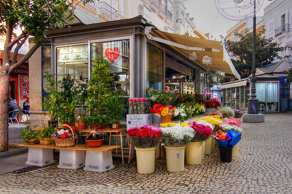
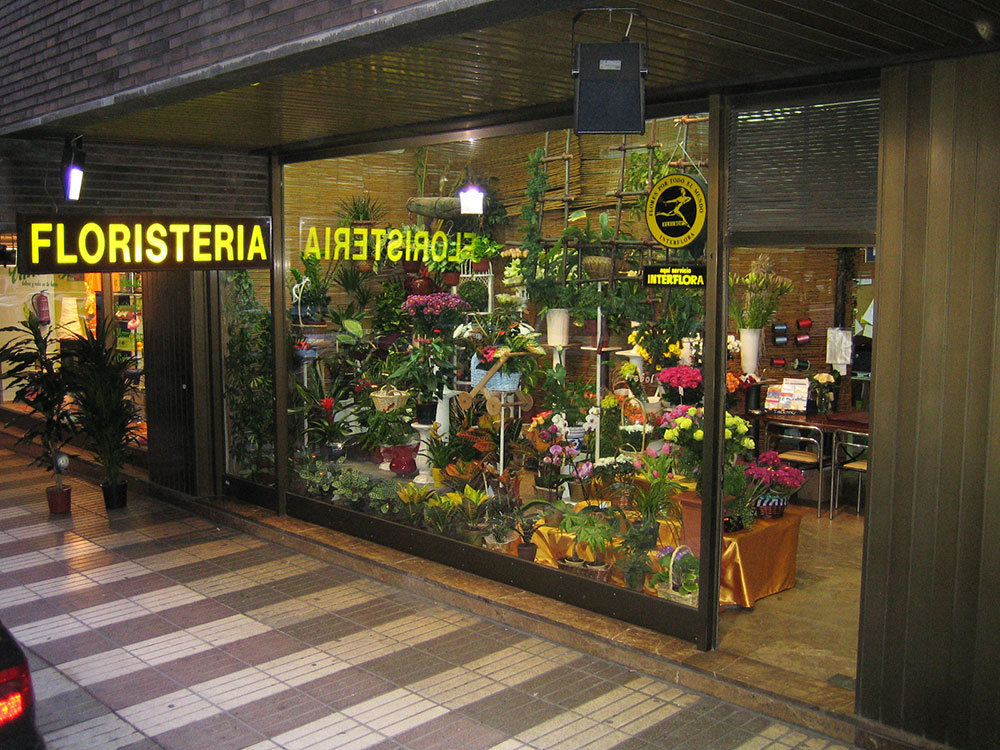
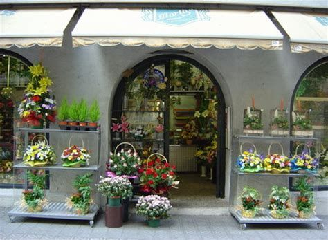
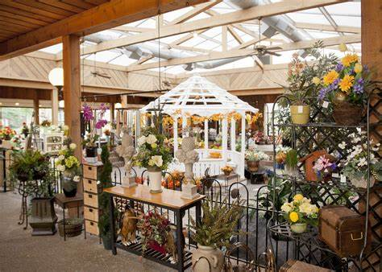
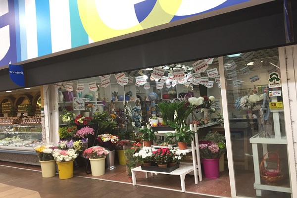

¡Tenemos sucursales en casi toda la Argentina!
Tenemos varios puntos de venta en distintos lugares de la argentina, si tienes alguna inquietud, o te interesa saber más de la sucursal que más cercana está a tu posición, no dudes en contactarnos llendo a la sección de Contacto, siendo por ahora el único medio disponible entre tu y nosotros. Horarios en todas nuestras sucursales suelen ser de 9hs a 18hs, no incluyendo fines de semana (Sábado y Domingo). Redes sociales serán creadas e incluidas muy pronto.
He aqui nuestras sucursales:
Sucursal en Buenos Aires
Esta se encuentra ubicada en la ciudad de Buenos Aires, contando con una larga trayectoria en elaboración artesanal, y envío a domicilio, de arreglos florales y regalos. Para cual cuenta con un amplia variedad de arreglos de flores de diferentes tipos colores y tamaños, ideales para compartir con tus seres queridos. Siempre pensado en crear la mejor experiencia de compra para su distinguida clientela, cuentan con una plataforma virtual en Internet. La cual te permite agilizar la de compras de manera tal que puedas seleccionar de su amplio catálogo el arreglo de flores que más se adapte a sus necesidades, sin moverse de su casa u oficina.

Sucursal en Santa Fe
Se encuentra en la avenida Blas Parera, a la altura de los 8000, contando támbien con un amplio catálogo de opciones entre los que encontrarás arreglos florales, canasta de rosas, floreros, regalos para hombres, día de las madres, día de San Valentín y más. Cualquiera que sea el momento a celebración que desees festejar en Regalos Flores encontrarás el regalo perfecto. Además también se destacan por su excelente servicio en decoración floral para todo tipo de evento social o corporativo. Ya que cuentan con floristas profesionales que se encargan de crear verdaderas obras de arte para hacer de tu celebración un evento mágico y memorable.

Sucursal en Cordoba
Ubicandose en avenida Maípu 176, al centro de Cordoba. Cuentan con un amplio y surtido catálogo de opciones entre los que encontrarás flores y regalos para todo tipo de ocasión, así como canasta de flores, arreglos con tortas y chocolate, arreglos con globos y peluches, combos especiales y mucho más. Todo lo que necesitas para festejar cumpleaños, graduaciones, aniversario de bodas y cualquier otra fecha u ocasión especial.

Sucursal en San Juan
Es una de las florerías que ya cuenta con más de 17 años de experiencia en venta y envío de flores. Lo que la posiciona como una de las mejores floristerias en Buenos Aires. Cuenta con una amplia gama de arreglos de flores entre los que se destacan, arreglos florales, ramos, rosas y todo tipo de flores para festejar los acontecimientos más importantes de tu vida. Ya sea que busques el regalo floral perfecto para un cumpleaños, aniversario, graduaciones, día de las madres o día de San Valentín. Ubicado en la capital San Juan, Av. Libertador 368 Este.

Sucursal en Chaco
Destacados por el uso de plantas ornamentales y decoración de interiores. Ubicado en Chaco - Resistencia, Avenida Belgrano 190. Con más de 16 años de antigüedad en el mercado de Resistencia, Chaco. Comercializamos las mejores flores de la región, rosas importadas, arreglos florales, ramos a medida y decoración para presentes y regalos, hogar y jardín. Además de su amplio catálogo de arreglos de flores también disponen de una variedad de acompañantes para personalizar tus regalos como chocolates, peluches y cristalería.

Sucursal en San Luis
Esta es una tienda ubicada en Mitre 237, con muchos años de experiencia dedicada al venta de flores y envíos de flores a domicilio en Buenos Aires, San Luis. Siendo una gran alternativa para aquellas personas que se encuentren lejos y desean compartir momentos especiales con tus seres queridos. Ya que brinda una amplia variedad de regalos y arreglos de flores para festejar aniversario de bodas, graduaciones , cumpleaños y más. Y es que esta florería en Buenos Aires te ofrece la oportunidad de expresar tu sentimientos por esa persona especial y por tus seres queridos a través de hermosos y elegantes arreglos de flores elaborados con flores y materiales de primera calidad.

Sucursal en Formosa
Esta es una florería que se ubica en Padre Patiño 674 y se dedica a elaborar exclusivos diseños de flores para celebrar cualquier tipo de fecha importante u ocasión especial. Cuentan con un grupo de floristas profesionales que se encargará de elaborar los más hermosos arreglos de flores que te permitirán tu mensaje de amor, de amistad o agradecimiento por tus seres queridos. Sus más de 14 años brindando excelente atención y trato agradable a su distinguida clientela.

Sucursal en Santa Cruz
Esta es considerada una de las mejores florerías en la provincia de Santa Cruz por mantenerse siempre a la vanguardia en diseños y decoración de eventos, ubicada en Rivadavia 746 - Pico Truncado. Para esto cuentan con floristas y diseñadores de nivel internacional que ponen a tu disposición un extenso portafolio de productos y servicios que harán de esa ocasión especial, un momento único y original. Esta prestigiosa florería se caracteriza por ofrecer productos de primera calidad estrictamente seleccionados para darle ese toque único y original a esos momentos importantes.
